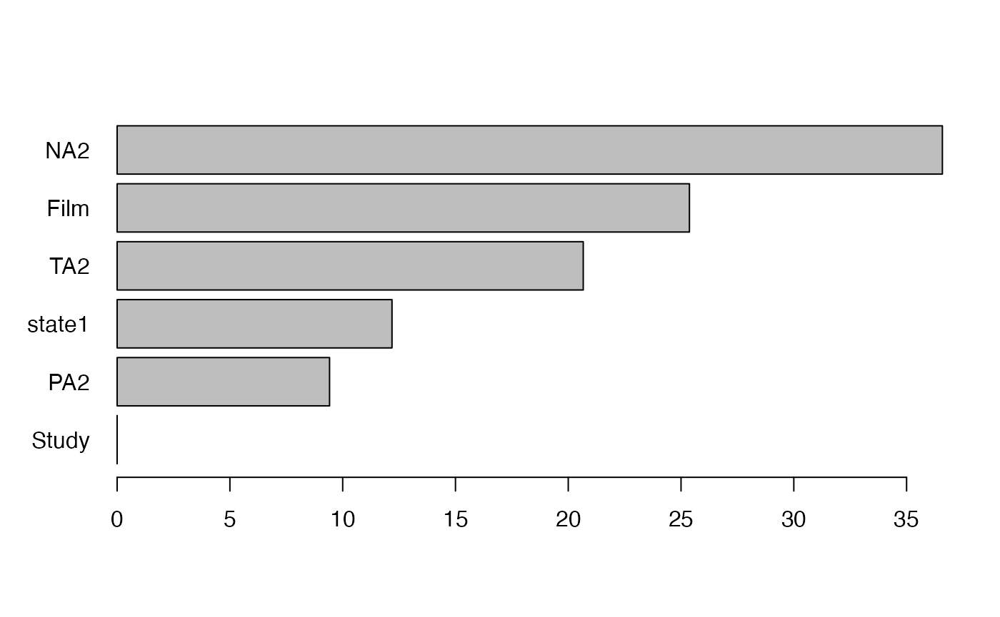

forests.RmdLoad affect dataset from the psychTools package. These are data from two studies conducted in the Personality, Motivation and Cognition Laboratory at Northwestern University to study affect dimensionality and the relationship to various personality dimensions.
library(psychTools)
data(affect)
knitr::kable(head(affect))| Study | Film | ext | neur | imp | soc | lie | traitanx | state1 | EA1 | TA1 | PA1 | NA1 | EA2 | TA2 | PA2 | NA2 | state2 | MEQ | BDI |
|---|---|---|---|---|---|---|---|---|---|---|---|---|---|---|---|---|---|---|---|
| maps | 3 | 18 | 9 | 7 | 10 | 3 | 24 | 22 | 24 | 14 | 26 | 2 | 6 | 5 | 7 | 4 | NA | NA | 0.0476190 |
| maps | 3 | 16 | 12 | 5 | 8 | 1 | 41 | 40 | 9 | 13 | 10 | 4 | 4 | 14 | 5 | 5 | NA | NA | 0.3333333 |
| maps | 3 | 6 | 5 | 3 | 1 | 2 | 37 | 44 | 1 | 14 | 4 | 2 | 2 | 15 | 3 | 1 | NA | NA | 0.1904762 |
| maps | 3 | 12 | 15 | 4 | 6 | 3 | 54 | 40 | 5 | 15 | 1 | 0 | 4 | 15 | 0 | 2 | NA | NA | 0.3846154 |
| maps | 3 | 14 | 2 | 5 | 6 | 3 | 39 | 67 | 12 | 20 | 7 | 13 | 14 | 15 | 16 | 13 | NA | NA | 0.3809524 |
| maps | 1 | 6 | 15 | 2 | 4 | 5 | 51 | 38 | 9 | 14 | 5 | 1 | 7 | 12 | 2 | 2 | NA | NA | 0.2380952 |
affect$Film <- as.factor(affect$Film)
affect$lie <- as.ordered(affect$lie)
affect$imp <- as.ordered(affect$imp)The following code implements a simple SEM with only a single manifest variables and two parameters, the mean of state anxiety after having watched a movie (state2), \(\mu\), and the variance of state anxiety, \(\sigma^2\).
library(OpenMx)
manifests<-c("state2")
latents<-c()
model <- mxModel("Simple Model",
type="RAM",
manifestVars = manifests,
latentVars = latents,
mxPath(from="one",to=manifests, free=c(TRUE), value=c(1.0) , arrows=1, label=c("mu") ),
mxPath(from=manifests,to=manifests, free=c(TRUE), value=c(1.0) , arrows=2, label=c("sigma2") ),
mxData(affect, type = "raw")
);
result <- mxRun(model)
#> Running Simple Model with 2 parametersThese are the estimates of the model when run on the entire sample:
summary(result)
#> Summary of Simple Model
#>
#> free parameters:
#> name matrix row col Estimate Std.Error A
#> 1 sigma2 S state2 state2 115.05415 12.479303
#> 2 mu M 1 state2 42.45118 0.822672
#>
#> Model Statistics:
#> | Parameters | Degrees of Freedom | Fit (-2lnL units)
#> Model: 2 168 1289.158
#> Saturated: 2 168 NA
#> Independence: 2 168 NA
#> Number of observations/statistics: 330/170
#>
#> Information Criteria:
#> | df Penalty | Parameters Penalty | Sample-Size Adjusted
#> AIC: 953.1576 1293.158 1293.194
#> BIC: 314.9100 1300.756 1294.412
#> CFI: NA
#> TLI: 1 (also known as NNFI)
#> RMSEA: 0 [95% CI (NA, NA)]
#> Prob(RMSEA <= 0.05): NA
#> To get additional fit indices, see help(mxRefModels)
#> timestamp: 2021-06-09 09:04:22
#> Wall clock time: 0.05435491 secs
#> optimizer: SLSQP
#> OpenMx version number: 2.19.5
#> Need help? See help(mxSummary)Create a forest control object that stores all tuning parameters of the forest. Note that we use only 5 trees for demo purposes. Please increase the number in real applications.
control <- semforest.control(num.trees = 5)
print(control)
#> SEM-Forest control:
#> -----------------
#> Number of Trees: 5
#> Sampling: subsample
#> Comparisons per Node: 2
#>
#> SEM-Tree control:
#> ▔▔▔▔▔▔▔▔▔▔
#> ● Splitting Method: fair
#> ● Alpha Level: 1
#> ● Bonferroni Correction:FALSE
#> ● Minimum Number of Cases: 20
#> ● Maximum Tree Depth: NA
#> ● Number of CV Folds: 5
#> ● Exclude Heywood Cases: FALSE
#> ● Test Invariance Alpha Level: NA
#> ● Use all Cases: FALSE
#> ● Verbosity: FALSE
#> ● Progress Bar: TRUE
#> ● Seed: NANow, run the forest using the control object:
forest <- semforest( model=model, data = affect, control = control )
#> ❯ Model was not run. Estimating parameters now before running the forest.
#> Running Simple Model with 2 parameters
#>
#> Beginning initial fit attempt
#> Running Simple Model with 2 parameters
#>
#> Lowest minimum so far: 1289.15758570645
#>
#> Solution found#>
#> Solution found! Final fit=1289.1576 (started at 311965.65) (1 attempt(s): 1 valid, 0 errors)
#> Start values from best fit:
#> 115.05414693347,42.4511763398574
#> ✔ Tree construction finished [took 8s].
#> ✔ Tree construction finished [took 7s].
#> ✔ Tree construction finished [took 8s].
#> ✔ Tree construction finished [took 8s].
#> ✔ Tree construction finished [took 8s].
#> ✔ Forest completed [took 39s]Next, we compute permutation-based variable importance.
vim <- varimp(forest)
print(vim, sort.values=TRUE)
#> Variable Importance
#> lie Study ext imp soc NA1 TA2
#> -3.5269633 0.0000000 0.0000000 0.0000000 0.0000000 0.0000000 0.0000000
#> MEQ BDI EA1 neur PA2 PA1 TA1
#> 0.0000000 0.0000000 0.8144743 0.8327642 1.4999646 1.7389287 2.8592936
#> traitanx Film state1 EA2 NA2
#> 3.1334580 5.6242254 8.1234209 12.9210946 22.3214619
plot(vim)
From this, we can learn that variables such as NA2 representing negative affect (after the movie), TA2 representing tense arousal (after the movie), and state1 representing the state anxiety before having watched the movie, are the best predictors of difference in the distribution of state anxiety (in either mean, variance or both) after having watched the movie.